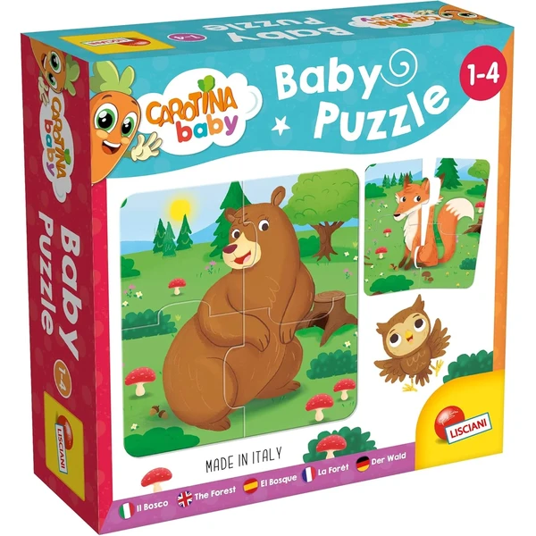

👶 3 años
Lisciani Baby Puzzle El Bosque
Un set de 6 mini puzzles de 4 piezas cada uno con animales del bosque, con piezas de autocorrección que solo encajan de una manera. Cartón grueso y resistente pensado para las primeras veces con un puzzle.
⭐
¿Por qué nos gusta?
- ✔6 mini puzzles de 4 piezas cada uno.
- ✔Piezas de autocorrección, solo encajan bien.
- ✔Cartón grueso, resistente al uso diario.
💬
Lo que más destacan las familias
Muchos padres coinciden en que es un puzzle perfecto para el primer contacto, ya que las piezas de autocorrección evitan frustraciones. La variedad de 6 animales distintos también se valora para no cansarse de repetir siempre lo mismo.